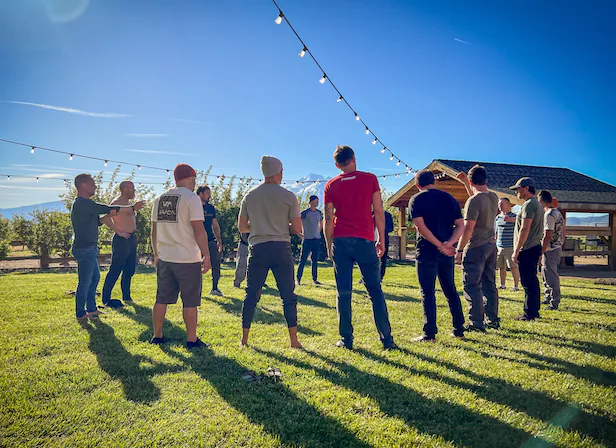

B943 · Awaken the Sleeping Giant Within
Hi {first_name},
I believe that within each man lies a dormant force of power, wisdom, integrity, and direction—a sleeping giant waiting to be awakened.
As men, we all possess this potential, and it's essential to recognize its existence within us. When this sleeping giant stirs, incredible transformations occur, allowing us to tap into our true capabilities and lead more fulfilling lives.
At times, however, we might find ourselves slipping into comfort zones, causing the giant to retreat into its cave. We may feel overly relaxed, unenthusiastic, and disconnected from our purpose. Recognizing these signs can be the first step towards change.
The sleeping giant is recognizable when:
Despite being dormant, it's crucial to remember that a giant still resides within us, ready to awaken and empower us to:
The sleeping giant is a powerful force that resides within all of us just waiting to come alive and transform into the wild man, as poet Robert Bly described in his book Iron John.
The journey to Inspired Action involves awakening this potential within ourselves, acknowledging the essential aspects of our being, and rising to embrace our true selves.
As we head on this path of self-discovery and growth, we also unconsciously grant others the permission to explore their own hidden potential, creating a supportive environment for personal development and transformation.
 If you resonate with the idea of awakening the sleeping giant inside and embarking on a journey of self-discovery, I invite you to join our upcoming small group virtual coaching program, limited to just 12 men, commencing on October 1st.
Early discounted pricing for the program, The Path to Inspired Action is available until July 31st.
Click here to learn more about the program and secure your spot today.
I genuinely hope to see you there, ready to unleash your untapped potential.
Best regards, Mike |